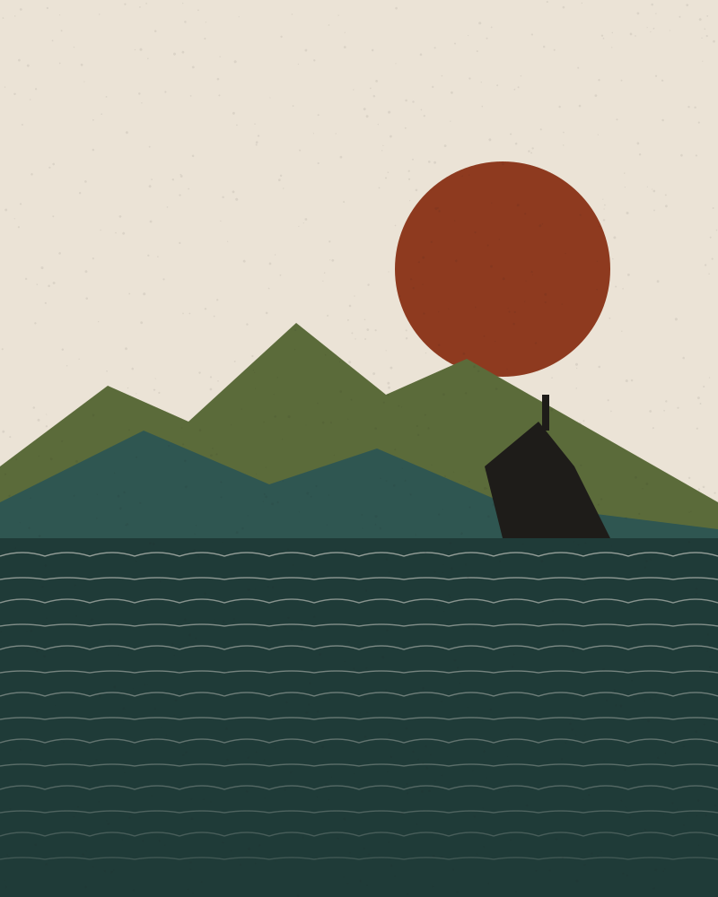
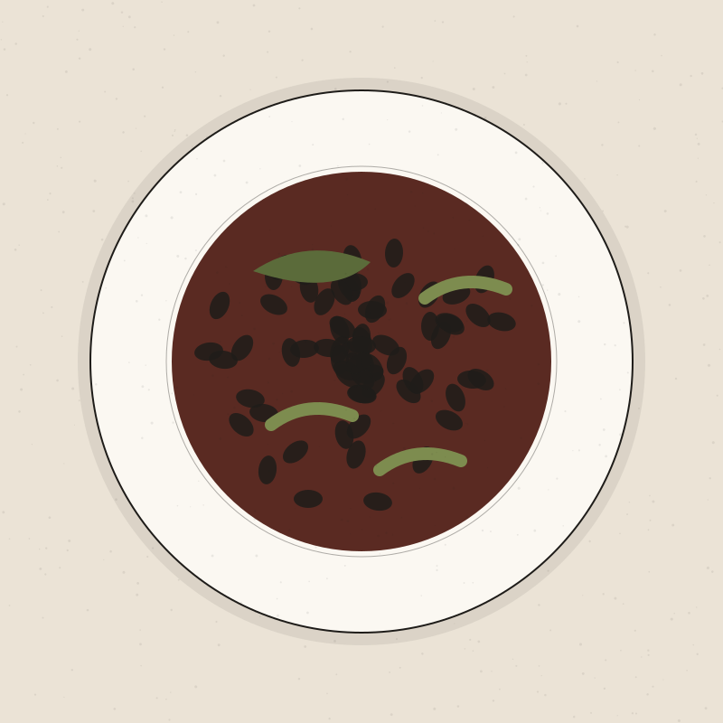
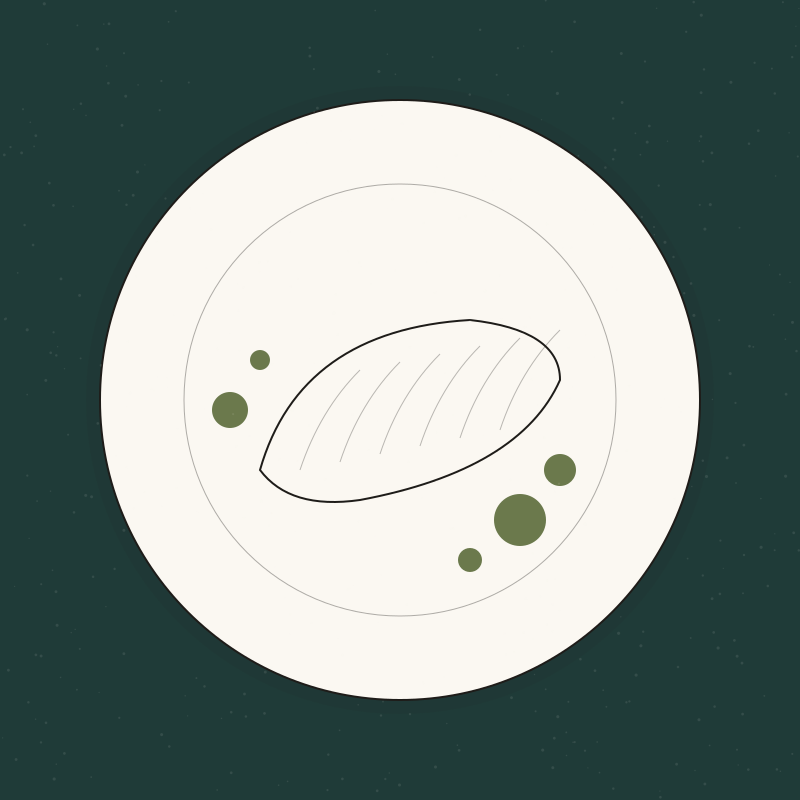
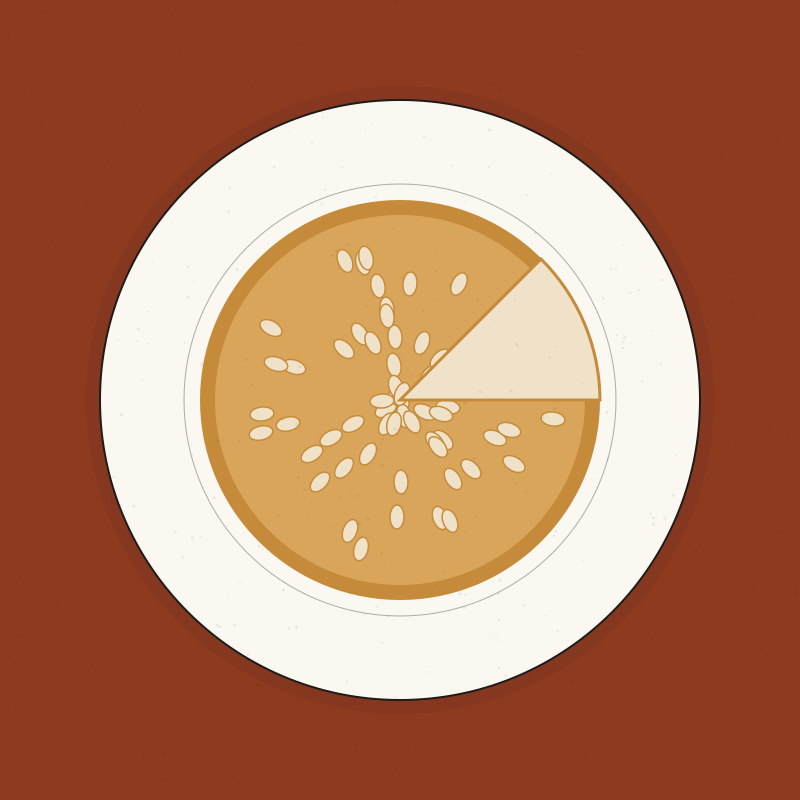
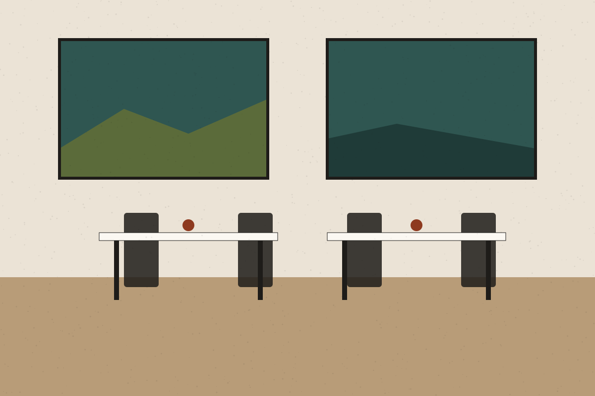

Producto de temporada
La carta cambia con el mercado. Si un producto no está en su mejor momento, sencillamente no aparece.
Restaurante ficticio · Gipuzkoa
Un comedor pequeño donde la temporada decide la carta: verdura de huerta cercana, pescado de anzuelo y brasa lenta. Cocina sin artificio, servida con calma.

La casa
La carta cambia con el mercado. Si un producto no está en su mejor momento, sencillamente no aparece.
Brasa de encina, guisos largos y caldos de un día para otro. Técnica al servicio del sabor, no del espectáculo.
Pocas mesas, tiempo para conversar y una bodega corta, con protagonismo de txakoli y sidra.
De la carta
Una muestra de la carta de otoño. Los platos y precios son provisionales.

Guiso lento de alubia con berza rehogada y piparras frescas a la plancha.

Lomo confitado, perejil, ajo y un pilpil ligero hecho con la propia gelatina del pescado.

Hojaldre, crema pastelera y almendra tostada. Se hornea en cada servicio.

La mesa
Abrimos de miércoles a domingo. Las solicitudes de reserva se atienden por orden de llegada y se confirman siempre de forma personal.
Importante: en esta versión de demostración el formulario no envía datos ni confirma reservas.
La temporada escribe la carta; nosotros solo intentamos no estropearla.